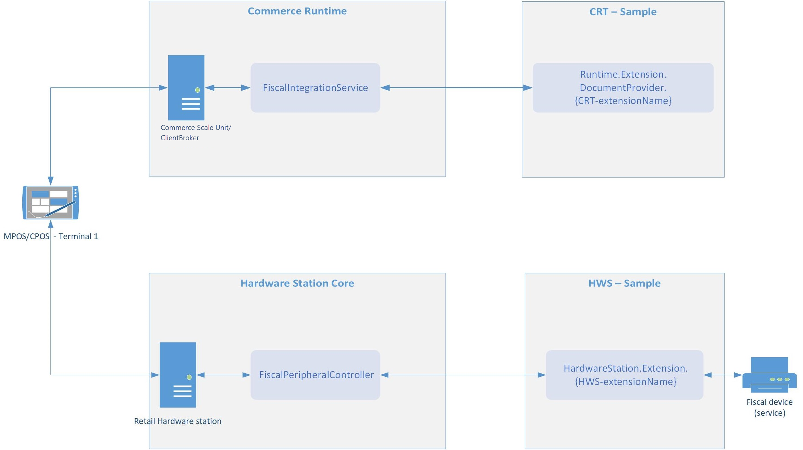

Übersicht über die Steuerintegration für Commerce-Kanäle
Important
Dynamics 365 Retail ist jetzt Dynamics 365 Commerce und bietet umfassende Handelsfunktionen für alle Kanäle – von E-Commerce über Shops bis hin zu Callcentern. Weitere Informationen zu diesen Änderungen finden Sie unter Microsoft Dynamics 365 Commerce.
Einführung
Dieses Thema bietet einen Überblick der Steuerintegrationsfunktionen, die in Dynamics 365 Commerce verfügbar sind. Die Steuerintegration enthält die Integration in unterschiedliche steuerbezogene Geräte und Dienste, die Benutzern die Steuerregistrierung von Verkäufen entsprechend lokaler Steuergesetze zur Verhinderung von Steuerhinterziehung im Einzelhandel ermöglicht. Nachfolgend einige typische Szenarien, die erfasst werden können, indem die Steuerintegration verwendet wird:
- Erfassen Sie einen Verkauf auf einem steuerbezogenen Gerät, das mit einem Retail Point of Sale (POS) verbunden ist, z. B. einem Belegdrucker, und drucken Sie einen Steuerbeleg für den Kunden.
- Senden Sie Informationen, die Verkäufen und Rücksendungen zugeordnet sind, die in Retail POS abgeschlossen werden, sicher an einen externen Webdienst, der von der Steuerbehörde betrieben wird.
- Gewährleisten Sie die Unveränderbarkeit von Verkaufsbuchungsdaten durch digitale Signaturen.
Die Steuerintegrationsfunktionen sind ein Framework, das eine allgemeine Lösung für die weitere Entwicklung und Anpassung der Integration zwischen Retail POS und steuerbezogenen Geräten und Diensten bereitstellt. Die Funktionalität umfasst auch Beispiele für die fiskalische Integration, die grundlegende Szenarien für bestimmte Länder oder Regionen unterstützen und die mit bestimmten fiskalischen Geräten oder Diensten arbeiten. Ein Steuerintegrationsbeispiel besteht aus mehreren Erweiterungen von Commerce-Komponenten und ist im Software Development Kit (SDK) enthalten. Weitere Informationen zu Steuerintegrationsbeispielen finden Sie unter Steuerintegrationsbeispiele im Retail SDK. Informationen zur Installation und Verwendung des Retail SDK finden Sie unter Retail Software Development Kit (SDK) Architektur (This is an external link).
Um andere Szenarien zu unterstützen, die nicht von einem Steuerintegrationsbeispiel unterstützt werden, um Retail POS in andere steuerbezogene Geräte oder Dienste zu integrieren, oder um Anforderungen anderer Länder/Regionen zu erfüllen, müssen Sie entweder ein vorhandenes Steuerintegrationsbeispiel erweitern oder ein neues Beispiel mithilfe eines vorhandenen Beispiels erstellen.
Steuerregistrierungsprozess und Steuerintegrationsbeispiele für steuerbezogene Geräte
Ein Steuerregistrierungsprozess in Retail POS kann aus einem oder mehreren Schritten bestehen. Jeder Schritt umfasst die Steuerregistrierung bestimmter Transaktionen oder -ereignisse in einem steuerbezogenes Gerät oder einem steuerbezogenen Dienst. Die folgenden Lösungskomponenten nehmen an der Steuerregistrierung in einem steuerbezogenen Gerät teil, das mit einer Hardwarestation verbunden ist:
- Commerce Runtime (CRT)-Erweiterung – Diese Komponente serialisiert Transaktions-/Ereignisdaten in das Format, das auch für die Interaktion mit dem steuerbezogenen Gerät verwendet wird, analysiert Antworten vom steuerbezogenen Gerät und speichert die Antworten in der Kanaldatenbank. Die Erweiterung definiert auch die spezifischen Transaktionen und Ereignisse, die erfasst werden müssen. Diese Komponente wird häufig als Steuerdokumentanbieter bezeichnet.
- Hardwarestationserweiterung – Diese Komponente initialisiert die Kommunikation mit dem steuerbezogenen Gerät, sendet Anforderungen und direkte Befehle an das steuerbezogene Gerät auf Basis der Transaktions-/Ereignisdaten, die aus dem Steuerdokument extrahiert werden, und empfängt Antworten vom steuerbezogenen Gerät. Diese Komponente wird häufig als Steuerkonnektor bezeichnet.
Ein Steuerintegrationsbeispiel für ein steuerbezogenes Gerät enthält jeweils die CRT und Hardwarestationserweiterungen für einen Steuerdokumentanbieter und Steuerkonnektor. Es enthält auch die folgenden Komponentenkonfigurationen:
- Steuerdokumentanbieter-Konfiguration – Diese Konfiguration definiert eine Ausgabemethode und ein Format für Steuerdokumente. Es enthält auch eine Datenzuordnung für Steuern und Zahlungsmethoden, um Daten aus Retail POS mit den Werten, die in der Firmware des steuerbezogenen Geräts vordefiniert werden, kompatibel zu machen.
- Steuerkonnektorkonfiguration – Diese Konfiguration definiert die physische Kommunikation mit dem betreffenden steuerbezogenen Gerät.
Ein Steuerregistrierungsprozess für ein bestimmtes POS-Register wird von einer entsprechenden Einstellung im POS-Funktionsprofil definiert. Weitere Informationen zum Konfigurieren eines Steuerregistrierungsprozesses, Hochladen von Steuerdokumentanbieter- und Steuerkonnektorkonfigurationen und Ändern ihrer Parameter finden Sie unter Einrichten eines Steuerregistrierungsprozesses.
Das folgende Beispiel zeigt einen typischen Steuerregistrierungs-Ausführungsfluss für ein steuerbezogenes Gerät. Der Fluss startet mit einem Ereignis im POS (beispielsweise dem Abschluss einer Verkaufsbuchung) und implementiert die folgende Schrittfolge:
- Der POS fordert ein Steuerdokument von CRT an.
- CRT bestimmt, ob das aktuelle Ereignis eine Steuerregistrierung erfordert.
- Auf Grundlage der Steuerregistrierungsprozess-Einstellungen identifiziert CRT einen Steuerkonnektor und entsprechenden Steuerdokumentanbieter, der für die Steuerregistrierung verwendet werden soll.
- CRT führt den Steuerdokumentanbieter aus, der ein Steuerdokument generiert (beispielsweise ein XML-Dokument), das die Transaktion oder das Ereignis darstellt.
- Der POS sendet das Steuerdokument, das CRT vorbereitet, an eine Hardwarestation.
- Die Hardwarestation führt den Steuerkonnektor aus, der das Steuerdokument verarbeitet und es an das steuerbezogene Gerät oder den steuerbezogenen Dienst kommuniziert.
- Der POS analysiert die Antwort vom steuerbezogenen Gerät oder Dienst, um zu bestimmen, ob die Steuerregistrierung erfolgreich war.
- CRT speichert die Antwort in der Kanaldatenbank.

Fehlerbehandlung
Das Steuerintegrationsframework bietet folgende Optionen, um Fehler bei der Steuerregistrierung zu behandeln:
- Wiederholen – Operatoren können diese Option verwenden, wenn der Fehler schnell behoben werden kann, und die Steuerregistrierung erneut ausgeführt werden kann. Beispielsweise kann diese Option verwendet werden, falls das steuerbezogene Gerät nicht verbunden ist, im Belegdrucker kein Papier mehr vorhanden ist oder Papierstau im Belegdrucker herrscht.
- Abbrechen – Mit dieser Option können Operatoren die Steuerregistrierung der aktuellen Transaktion oder des aktuellen Ereignisses verschieben, auch bei einem Fehler. Nachdem die Registrierung verschoben ist, kann der Operator am POS weiterarbeiten und jeden beliebigen Arbeitsgang abschließen, für den die Steuerregistrierung nicht erforderlich ist. Wenn ein Ereignis, das die Steuerregistrierung erfordert, am POS auftritt (beispielsweise wird eine neue Transaktion geöffnet), wird das Fehlerbehandlungsdialogfeld automatisch angezeigt, um den Operator zu benachrichtigen, dass die vorherige Transaktion nicht ordnungsgemäß erfasst wurde und um die Fehlerbehandlungsoptionen bereitzustellen.
- Überspringen – Operatoren können diese Option verwenden, wenn die Steuerregistrierung unter bestimmten Bedingungen ausgelassen werden kann und regelmäßige Vorgänge am POS fortgesetzt werden können. Beispielsweise kann diese Option verwendet werden, wenn eine Verkaufsbuchung, bei der ein Fehler bei der Steuerregistrierung aufgetreten ist, in einer Papiererfassung erfasst werden kann.
- Als registriert markieren – Operatoren können diese Option verwenden, wenn die Transaktion tatsächlich auf dem steuerbezogenen Gerät registriert wurde (z. B. wurde ein Steuerbeleg ausgedruckt), jedoch ein Fehler aufgetreten ist, als die Steuerantwort in der Kanaldatenbank gespeichert wurde.
Note
Die Optionen Überspringen und Als registriert markieren müssen im Steuerregistrierungsprozess aktiviert werden, bevor sie verwendet werden. Darüber hinaus müssen Operatoren entsprechende Berechtigungen gewährt werden.
Mit den Optionen Überspringen und Als registriert markieren können Infocodes bestimmte Informationen zum Fehler erfassen, z. B. den Grund für den Fehler oder eine Begründung für das Überspringen der Steuerregistrierung oder das Markieren der Transaktion als registriert. Weitere Informationen zum Einrichten von Fehlerbehandlungsparametern finden Sie unter Festlegen von Fehlerbehandlungseinstellungen.
Optionale Steuerregistrierung
Steuerliche Erfassung ist möglicherweise erforderlich für einige Vorgänge aber für andere optional. Beispielsweise kann die Steuererfassung von regulärenr Verkäufen und Rücklieferungen zwingend sein, aber die steuerliche Erfassung, die sich auf Debitoreneinzahlungen bezieht ist optional. In diesem Fall sollte die fehlende steuerliche Erfassung eines Verkaufs andere Aufträge sperren, wenn aber die steuerliche Erfassung einer Debitoreneinzahlung nicht abgeschlosse ist, sollten andere Aufträge nicht gesperrt werden. Um die erforderlichen und optionalen Arbeitsgänge zu unterscheiden, sollten Sie sie durch verschiedene Dokumentanbieter abwickeln und separate Schritte für den steuerlichen Erfassungsprozesses für diese Anbieter einrichten. Der Parameter muss Bei Fehler fortsetzen für einen Schritt aktiviert werden, der der optionalen steuerlichen Erfassung zugeordnet ist. Weitere Informationen zum Einrichten von Fehlerbehandlungsparametern finden Sie unter Festlegen von Fehlerbehandlungseinstellungen.
Steuerliche Erfassung manuell ausführen
Wenn die Buchung einer Steuererfassung oder einess Ereignisses nach einem Fehler (beispielsweise wenn der Operator Abbrechen im Fehlerbehandlungsdialogfeld gewählt hat) verschoben wurde, können Sie die steuerliche Erfassung manuell überprüfen, indem Sie einen entsprechenden Arbeitsgang aufrufen. Weitere Details finden Sie unter Manuelle Ausführung der verschobenen steuerlichen Erfassung aktivieren.
Steuerliche Erfassungsintegritätsprüfung
Die Integritätsprüfungsprozedur für die steuerliche Registrierungen überprüft die Verfügbarkeit des steuerlichen Geräts oder der Dienstleistung, wenn bestimmte Ereignisse auftreten. Wenn die steuerliche Erfassung gerade nicht abgeschlossen werden kann, wird der Mitarbeiter im Voraus benachrichtigt.
Der POS führt die Integritätsprüfung aus, wenn die folgenden Ereignisse auftreten:
- Eine neue Transaktion wird geöffnet.
- Eine ausgesetzte Transaktion wird zurückgerufen.
- Ein Verkaufs- oder eine Rücklieferungstransaktion ist abgeschlossen.
Wenn die Integritätsprüfung fehlschlägt, wird im POS das Integritätsprüfungsdialogfeld angezeigt. Dieses Dialogfeld enthält die folgenden Schaltflächen:
- OK – Mit dieser Schaltfläch kann der Mitarbeiter einen Integritätsprüfungsfehler ignorieren und den Arbeitsgang weiter verarbeiten. Mitarbeiter können diese Schaltfläche nur auswählen, wenn die Berechtigung integritätsprüfungsfehler überspringen zulassen aktiviert ist.
- Abbrechen – Wenn der Mitarbeiter diese Schaltfläche auswählt, bricht der POS die letzte Aktion ab (beispielsweise wird ein Artikel der neuen Transaktlion nicht hinzugefügt).
Note
Die Integritätsprüfung wird nur ausgeführt, wenn der aktuelle Arbeitsgang eine Steuererfassung erfordert und wenn der Parameter Bei Fehler fortsetzen für den aktuellen Schritt des steuerlichen Anmeldeprozesses deaktiviert wird. Weitere Informationen finden Sie unterFehlerbehandlungseinstellungen.
Speichern der Steuerantwort in der Steuertransaktion
Wenn die Steuerregistrierung einer Transaktion oder eines Ereignisses erfolgreich war, wird eine Steuertransaktion in der Kanaldatenbank erstellt und mit der ursprünglichen Transaktion oder dem ursprünglichen Ereignis verknüpft. Wenn die Option Überspringen oder Als registriert markieren für eine fehlgeschlagene Steuerregistrierung ausgewählt ist, werden diese Informationen in einer Steuertransaktion entsprechend gespeichert. Eine Steuertransaktion enthält die Steuerantwort vom steuerbezogenen Gerät oder Dienst. Wenn der Steuerregistrierungsprozess aus mehreren Schritten besteht, wird eine Steuertransaktion für die einzelnen Schritte des Prozesses erstellt, der zu einer erfolgreichen oder fehlgeschlagenen Registrierung geführt hat.
Steuerbezogene Buchungen werden zusammen mit den Transaktionen über den P-Job an die Zentralverwaltung übertragen. Im Inforegister Steuerbezogene Buchungen auf der Seite für Geschäftsbuchungen können Sie die steuerbezogenen Buchungen anzeigen, die mit den Transaktionen verknüpft sind.
Eine Steuertransaktion speichert die folgenden Details:
- Steuerregistrierungsprozess-Details (Prozess, Konnektorgruppe, Konnektor usw.). Sie speichert außerdem die Seriennummer des steuerbezogenen Geräts im Feld Registernummer, wenn diese Informationen in der Steuerantwort enthalten sind.
- Der Status der Steuerregistrierung: Abgeschlossen für die erfolgreiche Registrierung, Übersprungen, wenn der Operator die Option Überspringen für eine fehlerhafte Registrierung ausgewählt hat, oder Als registriert markiert, wenn der Operator die Option Als registriert markieren ausgewählt hat.
- Infocodetransaktionen im Zusammenhang mit einer ausgewählten Steuertransaktion. Um die Infocodetransaktionen anzuzeigen, wählen Sie im Inforegister Steuertransaktionen eine Steuertransaktionen aus, die den Status Übersprungen oder Als registriert markiert aufweist, und wählen Sie dann Infocodetransaktionen aus.
Steuertexte für Rabatte
Einige Länder/Regionen haben spezielle Anforderungen zu zusätzlichen Texten, die auf Steuerbelege gedruckt werden müssen, wenn verschiedene Arten von Rabatten angewendet werden. Mit den Steuerintegrationsfunktionen können Sie einen bestimmten Text für einen Rabatt einrichten, der nach einer Rabattposition auf einen Steuerbeleg gedruckt wird. Bei manuellen Rabatten können Sie einen Steuertext für den Infocode konfigurieren, der als Produktrabatt-Infocode im POS-Funktionsprofil angegeben ist. Weitere Informationen zum Einrichten von Steuertexten für Rabatte finden Sie unter Einrichten von Steuertexten für Rabatte.
Drucken von Steuer X- und Steuer Z-Berichten
Die Steuerintegrationsfunktionen unterstützen die Generierung von Tagesendeauszügen, die für das integrierte steuerbezogene Gerät oder den integrierten steuerbezogenen Dienst spezifisch sind:
- Neue Schaltflächen, die die entsprechenden Vorgänge ausführen, sollten zum POS-Bildschirmlayout hinzugefügt werden. Weitere Informationen finden Sie unter Einrichten von Steuer X/Z-Berichten vom POS.
- Im Steuerintegrationsbeispiel sollten diese Vorgänge mit den gewünschten Vorgängen des steuerbezogenen Geräts abgeglichen werden.
Steuerintegrationsbeispiele im Retail SDK
Die folgenden Steuerintegrationsbeispiele sind derzeit im Retail SDK verfügbar:
- Beispiel für die Integration eines Belegdruckers für Italien (This is an external link)
- Beispiel für Belegdruckerintegration für Polen (This is an external link)
- Integrationsbeispiel für Steuererfassungsdienst für Österreich
- Integrationsbeispiel für Steuererfassungsdienst für Tschechische Republik (This is an external link)
- Beispiel zur Integration der Kontrolleinheit für Schweden (This is an external link)
- Integrationsbeispiel für Steuererfassungsdienst für Deutschland
Die folgenden Steuerintegrationsfunktionen sind ebenfalls im Retail SDK verfügbar, nutzen derzeit jedoch nicht das Steuerintegrationsframework. Die Migration dieser Funktionen in das Steuerintegrationsframework ist für spätere Aktualisierungen geplant.
- Digitale Signatur für Frankreich (This is an external link)
- Digitale Signatur für Norwegen (This is an external link)
Die folgenden älteren Funktionen für die steuerliche Integration, die im Retail SDK verfügbar sind, verwenden nicht das Framework für die steuerliche Integration und werden in späteren Updates nicht mehr unterstützt: